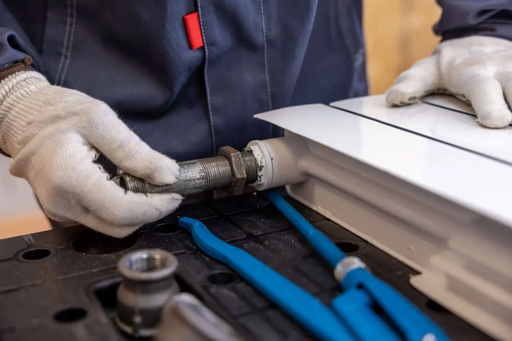

For homes
We fix dripping kitchen faucets, leaking bathroom fixtures, and stiff handles. We also install new faucets when repair no longer makes sense.
- Kitchen faucet drips
- Bathroom faucet leaks
- Stiff or broken handle
When a faucet drips or fails, you need faucet repair and installation Arlington Heights IL homeowners can count on. We fix leaky kitchen and bathroom fixtures, replace worn cartridges, and install new Moen, Delta, or Kohler faucets across Cook County.
 Check under sinkTest hot and coldVerify no leaks
Check under sinkTest hot and coldVerify no leaksEvery faucet job starts with a full diagnosis, not a guess. We check the cartridge, valve seat, O-rings, supply lines, and shut-off valves. If the fixture is repairable, we repair it with brand-matched parts. If it is not, we install a new faucet and test every connection. Here is what is included.

We disassemble the faucet, inspect the cartridge, valve seat, and seals, and check the supply lines and shut-off valves. You get a straight answer on repair versus replacement before we start any work.
We use genuine cartridges, O-rings, and seal kits for Moen, Delta, Kohler, and American Standard fixtures.
If replacement is the right call, we remove the old fixture, clean the mounting surface, and install your new faucet with new supply lines and shut-off valves where needed. We test hot and cold flow before we leave.
We inspect the supply lines and shut-off valves while we are under the sink. If they are corroded or seized, we replace them.
We turn the water on, run hot and cold, and check every connection with a flashlight and dry rag. If anything weeps, we fix it. Then we wipe down the sink and haul away the old fixture if you want.
We clean or replace the aerator to restore full flow and check the sprayer diverter and hose for leaks. Mineral buildup in Arlington Heights hard water clogs aerators fast. This is a quick fix that makes a big difference.
The approach is the same for a home and a business. What changes is the access, the schedule and who needs the paperwork.
We fix dripping kitchen faucets, leaking bathroom fixtures, and stiff handles. We also install new faucets when repair no longer makes sense.
We service break room faucets, commercial kitchen fixtures, and restroom faucets. We work around your hours and document the repair.
A plain-language look at what Faucet Repair and Installation involves and when it is needed.
See how it worksFaucet repair and installation Arlington Heights IL covers everything from a worn washer in a 30-year-old bathroom fixture to a full kitchen faucet swap on a modern pull-down model. We diagnose the failure at the cartridge, valve seat, or supply line, then repair or replace with parts matched to your fixture brand. Most jobs take one to two hours, and we test for leaks at every connection before we pack up.
Arlington Heights homes from Scarsdale to Old Arlington Heights deal with hard water that eats through rubber seals and mineral-crusts aerators. That means a faucet repair Arlington Heights, Illinois residents put off in January often becomes a corroded valve seat by spring. If you are searching for faucet repair near me Arlington Heights IL, we can usually be at your door the same day you call.
A faucet repair fixes the leak; a faucet replacement fixes the fixture.

We keep it simple: you call, we show up when we say we will, and we fix the problem. Here is exactly what happens from your first phone call to the final leak test.
Tell us what the faucet is doing: dripping, low pressure, stiff handle, or leaking at the base. We ask the brand and age if you know it. That lets us load the right cartridges and tools before we leave the shop, which saves you a second visit.

We shut off the supply valves, disassemble the handle and cartridge, and inspect the valve seat, O-rings, and supply lines. You get a straight answer on whether repair makes sense or replacement is the better call. Most diagnoses take 15 to 20 minutes.

If the cartridge or seals are the problem, we swap them with brand-matched parts. If the valve body is corroded or the fixture is outdated, we install a new faucet. We use plumber's putty and Teflon tape on every threaded connection to prevent future leaks.

We turn the water back on, run hot and cold through the fixture, and check every connection with a dry rag and flashlight. If anything weeps, we fix it before we leave. You get a walkthrough of what we did and what to watch for.

We wipe down the sink, haul away the old fixture if you want, and leave the workspace as clean as we found it. If you notice a drip in the first few days, call us and we will come back. That is how we do business in Arlington Heights.

Move across a circle, or focus it and press Enter, for an illustrative thermal view of the photograph.

Used to hold and turn supply line fittings and shut-off valves without stripping the nut. Essential for tight spaces under sinks.

Cuts copper and PEX supply lines cleanly for a square end that seals properly. A clean cut prevents leaks at the compression fitting.

Used when replacing supply lines with PEX tubing. It crimps the rings to the correct tension for a permanent, code-compliant connection.

For copper pipe repairs and new shut-off valve installations. We sweat the joint, let it cool, and pressure-test before moving on.

Finds hidden leaks behind walls or under cabinets without tearing things apart. We use it when a faucet leak is not the whole story.
Thermal views are illustrative, generated from the photographs.
Checks your home's water pressure. High pressure wears out faucet cartridges and supply lines faster. We measure it and recommend a regulator if needed.
Seals the faucet base to the sink and the threaded connections on supply lines. Correct application prevents leaks at the mounting surface and fittings.
We remove the faucet handle, pull the old cartridge, and install a brand-matched replacement. This is the standard fix for dripping and stiff-handle problems on Moen, Delta, and Kohler fixtures. We lubricate the new cartridge with silicone grease for smooth operation.
When the valve seat is corroded or pitted, we resurface it with a seat wrench or replace it entirely. A smooth seat is what stops the drip. This is common in older Arlington Heights fixtures with hard water damage.
When the valve body is cracked or corroded beyond repair, we remove the old faucet and install a new one. We replace the supply lines and shut-off valves at the same time, then test hot and cold flow and check every connection for leaks.
We replace old rubber or corroded supply lines with braided stainless steel lines. They last longer, resist bursting, and handle Arlington Heights water pressure better. We check the shut-off valves while we are at it.

Your kitchen faucet has been dripping for weeks and the water bill just went up.
We diagnose the cartridge and valve seat, replace the failed parts with brand-matched components, and clean the aerator. If the fixture is too far gone, we install a new kitchen faucet the same visit.
Outcome: The drip stops, your water bill goes back to normal, and you have a faucet that works smoothly for years.

You are remodeling your bathroom and want a new faucet installed with the new vanity.
We install your new bathroom faucet, connect the supply lines, and replace the shut-off valves if they are old. We coordinate with your countertop installer so the faucet goes in at the right time.
Outcome: A clean installation with no leaks, correct hot and cold orientation, and a faucet that matches your new vanity.

Your commercial break room faucet is leaking and you need it fixed before the health inspector visits.
We prioritize commercial calls and can often get out the same day. We repair or replace the faucet, check the supply lines and drain connection, and provide a photo report for your records.
Outcome: A working faucet, a dry counter, and documentation you can show the inspector. No disruption to your business.

You just bought a home in Arlington Heights and the inspection report flagged a leaky faucet.
We repair or replace the flagged faucet, check all the other fixtures while we are there, and give you a written summary of what we found. It is a good time to catch other issues before you move in.
Outcome: A repaired faucet, a clear picture of your home's plumbing, and one less thing on your move-in checklist.

Your outdoor spigot or laundry faucet will not shut off all the way.
We replace the washer, cartridge, or the whole faucet if the valve body is corroded. We check the supply line and shut-off valve inside the house while we are there.
Outcome: A faucet that shuts off completely, no more drip outside or in the laundry room, and no wasted water.

Homes in Scarsdale and Old Arlington Heights with original brass fixtures see faster wear than newer builds in Arlington Market. Winter brings another problem: frozen pipes and supply lines that crack when they thaw, especially in exterior wall runs. If you need same-day faucet installation Arlington Heights IL service after a cold snap, call us early.
We know the building stock here, from 1920s bungalows with galvanized pipe to 1990s ranches with copper and PEX. We follow Illinois plumbing code on every shut-off valve and supply line we touch, and we test for leaks before we leave. Whether it is a kitchen faucet leak repair Arlington Heights 60005 job or a bathroom fixture in 60004, we handle it.

Before: A homeowner in Scarsdale had a kitchen faucet dripping constantly for three months. The cartridge was worn and the aerator was clogged with mineral deposits.
After: We replaced the cartridge with a brand-matched Moen part, cleaned the aerator, and checked the shut-off valves. The drip stopped completely, water pressure improved, and the handle turns smoothly. Total time: about 75 minutes.
Run hot water through the faucet weekly to slow mineral buildup. Consider a water softener if you see white crust forming on the aerator. Replace the aerator screen every couple of years.
Before: An older Delta faucet in a 1960s ranch had a corroded valve body and leaked at the base. Repair was not an option. The shut-off valves under the sink were seized and the supply lines were brittle rubber.
After: We installed a new Delta faucet, replaced both shut-off valves with quarter-turn ball valves, and upgraded to braided stainless supply lines. Hot and cold flow tested strong, and the base is dry. The job took about two hours.
Turn the shut-off valves twice a year to keep them from seizing. Check under the sink monthly for any signs of moisture. Braided supply lines should be replaced every 5 to 7 years.
Before: A property manager in the Arlington Heights Business District had a leaking kitchen faucet in a tenant break room. The faucet was a cheap builder-grade model with a cracked valve body. The drain connection was also loose.
After: We installed a commercial-grade Moen faucet, tightened the drain connection, and replaced the supply lines. The leak stopped, the drain is tight, and we provided a photo report for the property manager's records. Same-day service.
Commercial faucets should be inspected every six months. Check the supply lines and drain connection for wear. Keep the aerator clean to maintain flow and prevent tenant complaints.
Faucets fail in predictable ways, and Arlington Heights water makes some of them worse. Here are the most common problems we see and how we solve them.

A faucet that works, no drips, and no water waste.
We keep common cartridges, O-rings, and supply lines on every truck, so most faucet repair Arlington Heights calls are finished in one visit. Call before noon and we can often have a plumber at your kitchen sink by mid-afternoon. No waiting days for a callback.
A faucet dripping once per second wastes more than 3,000 gallons a year. That is real money on your Arlington Heights water bill. We replace the failed cartridge or seat, not just the handle, so the leak actually stops instead of coming back in a month.
We stock and source genuine parts for Moen, Delta, Kohler, and American Standard fixtures. Using the correct cartridge and seal kit means your new faucet install Arlington Heights IL job lasts.
From a bathroom faucet repair Arlington Heights job to a full kitchen faucet installation Arlington Heights IL project, we handle both. That includes removing the old fixture, cleaning the mounting surface, installing new supply lines and shut-off valves, and testing hot and cold flow.
Clear records you can keep and share.
What we found and what we did
Cartridges, seals, or lines used
Before and after under the sink
How to keep the faucet working
Most faucet problems are repairable. The deciding factor is the condition of the valve body.
Cartridge, seals, or aerator are the problem
Valve seat is worn but the body is sound
Valve body is cracked or corroded
A list like this tells people straight away whether you cover their street. Not listed? Call and ask: it only takes a minute.
Based in Arlington Heights and covering the places around it. Pick one for local details.
A basic bathroom faucet swap sits at the low end. A kitchen pull-down with new valves and a garbage disposal connection runs higher. We quote the job before we start.
Yes, in most cases. We stock common cartridges and seals for Moen, Delta, and Kohler fixtures, so a same-day faucet installation Arlington Heights IL call or a simple drip repair is usually finished in one visit. Call before noon and we can often have a plumber at your door by mid-afternoon.
The most common cause is a worn cartridge or O-ring, especially in Arlington Heights where hard water mineral-crusts the internal seals. Other causes include a corroded valve seat, a loose packing nut, or a failed supply line connection. We diagnose the exact failure point before recommending repair or replacement.
A standard faucet replacement takes one to two hours from shut-off to final leak test. If we are replacing corroded shut-off valves or rerouting supply lines, add another 30 to 60 minutes. Kitchen faucets with pull-down sprayers and disposal connections can take slightly longer than a basic bathroom swap.
Other services from the same team.
We answer the phone, show up when we say we will, and fix the faucet right the first time. Call (224) 643-9856 and let's get that drip stopped.
Call (224) 643-9856 or email us and we will get back to you fast. Tell us what is going on and we will tell you what it takes to fix it.